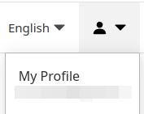
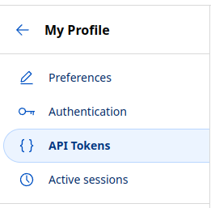
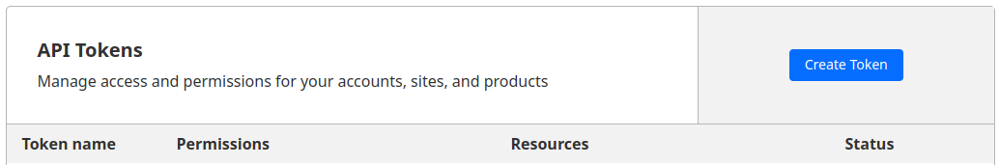
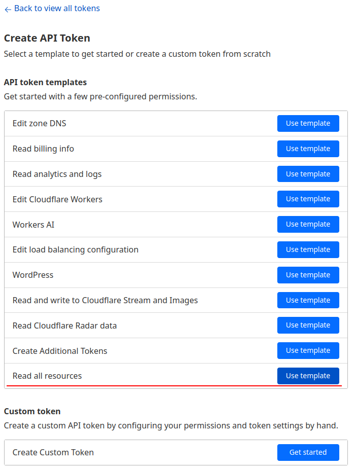
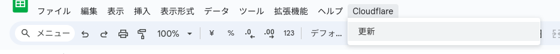

Cloudflareで公開しているホストとAccessのポリシーの対応一覧を作成する
Cloudflareは非常に便利で、Cloudflare Tunnel, Cloudflare Workers, Cloudflare Pagesなどいろんな方法でホストを公開しつつ、 Cloudflare Access (Cloudflare Zero Trust Applications)で認証の制御をしたり、といったことが簡単にできる。
一方で、公開しているホストは全部でどれだけあるのか、ポリシーの当て忘れはないか(当て忘れると一般公開されてしまう)、などがわかりにくい面があった。
そこでGASとCloudflareのAPIを使って、公開しているホストの一覧と、Accessで設定しているホストとポリシーの一覧を表示させるスクリプトを作ってみた。
CloudflareのAPI Tokenを作成
まずはCloudflareでAPI Tokenを生成する。
私は言語設定を英語にしているので、適宜読み替えてほしい。
- Cloudflareにログインし、右上の人物アイコンから「My Profile」をクリック
 - 左側のメニューから「API Token」をクリック
 - 青色の「Create Token」をクリック
 - 下の方にある「Read all resources」の右の「Use template」をクリック
 - 画面下の「Continue to summary」をクリック
- 確認画面が出るので下の方にある「Create Token」をクリック
- 表示されるAPI Tokenをコピー ※この文字列は1回しか表示されないので注意
簡単のためにRead all resourcesを使っているが、関係ないデータの読み取り権限もあるので、きっちりやるなら必要最低限のものに絞ってください。
スプレッドシートからGoogle Apps Scriptを作成
- Googleドライブのお望みのところでスプレッドシートを作成
- スプレッドシートのメニュー「拡張機能」から「Apps Script」をクリック
出てきたエディタに以下のコードを入力する。
先頭のAPI_TOKENには先程取得したCloudflareのAPI Tokenを入れる。
const API_TOKEN = "************************************";
function onOpen(){
SpreadsheetApp.getActiveSpreadsheet().addMenu("Cloudflare", [
{ name:"更新", functionName: "exportHostNamesToSheet" },
]);
}
/**
* 集計したホスト名をスプレッドシートに書き出す
*/
function exportHostNamesToSheet(){
const data = aggregateHostNames();
const hostnames = [...data.keys()].sort((a, b) => {
const a2 = a.split(".").reverse().join(".");
const b2 = b.split(".").reverse().join(".");
if(a2 < b2) return -1;
if(b2 < a2) return 1;
return 0;
});
const columns = ["hostname", "tunnel_name", "tunnel_service", "worker_name", "page_name", "access_application_name", "access_policies"];
const table = [columns];
for(const hostname of hostnames){
const row = [hostname];
const v = data.get(hostname);
for(let i = 1; i < columns.length; i++){
if(v[columns[i]]){
row.push(v[columns[i]]);
}else{
row.push("");
}
}
table.push(row);
}
const ss = SpreadsheetApp.getActiveSpreadsheet();
const sheet = ss.getSheetByName("シート1");
sheet.getDataRange().clearContent();
const range = sheet.getRange(1, 1, table.length, table[0].length);
range.setValues(table);
}
/**
* Cloudflareの各種設定で使われるホスト名を集計する
*/
function aggregateHostNames(){
const result = new Map();
const account_ids = getCfAccounts(API_TOKEN).map(e => e.id);
for(const account_id of account_ids){
// Access
const apps = getCfAccessApplications(API_TOKEN, account_id);
for(const app of apps){
if(app.self_hosted_domains){
for(const dom of app.self_hosted_domains){
const key = dom;
if(!result.has(key)){
result.set(key, {});
}
const obj = result.get(key);
obj.access_application_name = app.name;
obj.access_policies = app.policies.map(e => e.name).join(", ");
}
}else{
//console.log(app);
}
}
// Tunnel
const tunnels = getCfTunnels(API_TOKEN, account_id).filter(e => (e.deleted_at === null));
for(const tunnel of tunnels){
const tunnel_confs = getCfTunnelConfigurations(API_TOKEN, account_id, tunnel.id);
for(const i of tunnel_confs.config.ingress){
const key = i.hostname;
if(key){
if(!result.has(key)){
result.set(key, {});
}
const obj = result.get(key);
obj.tunnel_name = tunnel.name;
obj.tunnel_service = i.service;
}
}
}
// Worker
const workers = getCfWorkerDomains(API_TOKEN, account_id);
for(const worker of workers){
const key = worker.hostname;
if(!result.has(key)){
result.set(key, {});
}
const obj = result.get(key);
obj.worker_name = worker.service;
}
// Pages
const pages = getCfPageProjects(API_TOKEN, account_id);
for(const page of pages){
for(const dom of page.domains){
const key = dom;
if(!result.has(key)){
result.set(key, {});
}
const obj = result.get(key);
obj.page_name = page.name;
}
}
}
return result;
}
/**
* Cloudflareのアカウント一覧を取得する
* @param {string} token API Token
* @return {[{id:string,name:string,type,string}]}
*/
function getCfAccounts(token){
const json = JSON.parse(UrlFetchApp.fetch(`https://api.cloudflare.com/client/v4/accounts`, {
"headers": {
"Authorization": `Bearer ${token}`,
"Content-Type": "application/json"
}
}).getContentText("UTF-8"));
return json.result;
}
/**
* Cloudflare AccessのApplication一覧を取得する
* @param {string} token API Token
* @param {string} account_id Account ID
* @return {[{id:string,name:string,domain:string,self_hosted_domains:[string],policies:[{name:string}]}]}
*/
function getCfAccessApplications(token, account_id){
const json = JSON.parse(UrlFetchApp.fetch(`https://api.cloudflare.com/client/v4/accounts/${account_id}/access/apps`, {
"headers": {
"Authorization": `Bearer ${token}`,
"Content-Type": "application/json"
}
}).getContentText("UTF-8"));
return json.result;
}
/**
* Cloudflare Tunnelの一覧を取得する
* @param {string} token API Token
* @param {string} account_id Account ID
* @return {[{id:string,name:string,status:string}]}
*/
function getCfTunnels(token, account_id){
const json = JSON.parse(UrlFetchApp.fetch(`https://api.cloudflare.com/client/v4/accounts/${account_id}/cfd_tunnel`, {
"headers": {
"Authorization": `Bearer ${token}`,
"Content-Type": "application/json"
}
}).getContentText("UTF-8"));
return json.result;
}
/**
* Cloudflare Tunnelの設定一覧を取得する
* @param {string} token API Token
* @param {string} account_id Account ID
* @param {string} tunnel_id Tunnel ID
* @return {{tunnel_id:string,config:{ingress:[{service:string,hostname:string}]}}}
*/
function getCfTunnelConfigurations(token, account_id, tunnel_id){
const json = JSON.parse(UrlFetchApp.fetch(`https://api.cloudflare.com/client/v4/accounts/${account_id}/cfd_tunnel/${tunnel_id}/configurations`, {
"headers": {
"Authorization": `Bearer ${token}`,
"Content-Type": "application/json"
}
}).getContentText("UTF-8"));
return json.result;
}
/**
* Cloudflare Workerのドメイン一覧を取得する
* @param {string} token API Token
* @param {string} account_id Account ID
* @return {[{id:string,service:string,hostname:string}]}
*/
function getCfWorkerDomains(token, account_id){
const json = JSON.parse(UrlFetchApp.fetch(`https://api.cloudflare.com/client/v4/accounts/${account_id}/workers/domains`, {
"headers": {
"Authorization": `Bearer ${token}`,
"Content-Type": "application/json"
}
}).getContentText("UTF-8"));
return json.result;
}
/**
* Cloudflare Pagesで使うドメイン一覧を取得する
* @param {string} token API Token
* @param {string} account_id Account ID
* @return {[{id:string,name:string,subdomain:string,domains:[string]}]}
*/
function getCfPageProjects(token, account_id){
const json = JSON.parse(UrlFetchApp.fetch(`https://api.cloudflare.com/client/v4/accounts/${account_id}/pages/projects`, {
"headers": {
"Authorization": `Bearer ${token}`,
"Content-Type": "application/json"
}
}).getContentText("UTF-8"));
return json.result;
}
書き出し先のシート名をデフォルトのシート1から変更した場合は、コード中のss.getSheetByName("シート1");の部分を変更。
お好みでGASのプロジェクト名を設定し、エディタからexportHostNamesToSheetを実行。
初回のみプロジェクトに権限を与えるかどうかを尋ねられるので、許可する。
実行結果
実行結果のサンプル(の見た目を少し整えたもの)は以下のような感じ。
Tunnel、Workers、Pagesなど色んな方法で公開されているホストがA列に並び、G列に最終的に適用されているポリシーが表示される。
G列が空白のものはAccessでポリシーを設定し忘れていて、誤って全世界に公開してしまっている可能性があるので要注意。
私自身、Accessで入力したホスト名にtypoがあり、効いていると思っていたポリシーが効いておらず、誤って公開していたことが判明した。
その他
- Workersのデフォルトのドメイン名(
***.workers.dev)には現時点では非対応(API Documentで見つけられなかった) - 2回目以降、スプレッドシートを開くとメニューに「Cloudflare」が追加されるので、「更新」をクリックすることでスクリプトを実行できる
 - Cloudflareは進歩が早く、このページの内容やAPIが古くなっている可能性があるので、最新の情報もチェックしてほしい